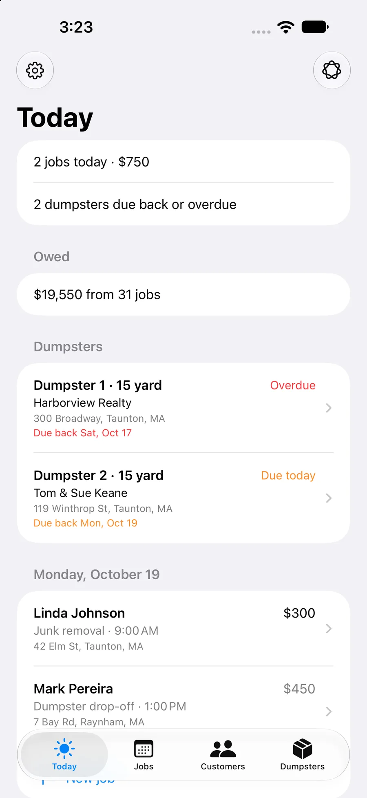
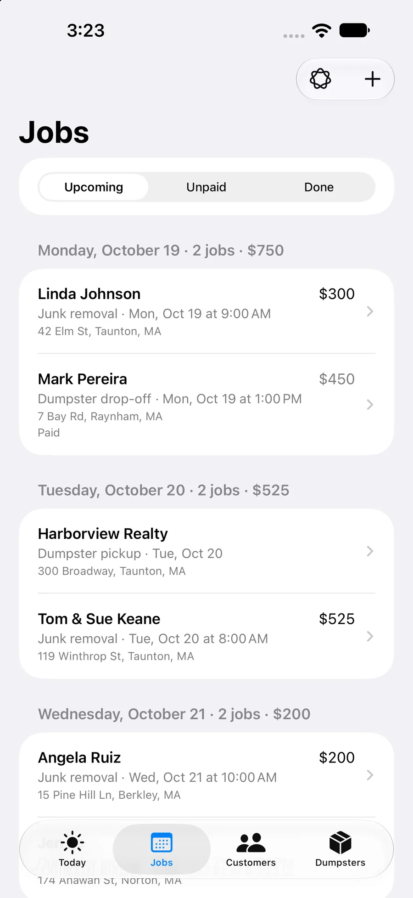
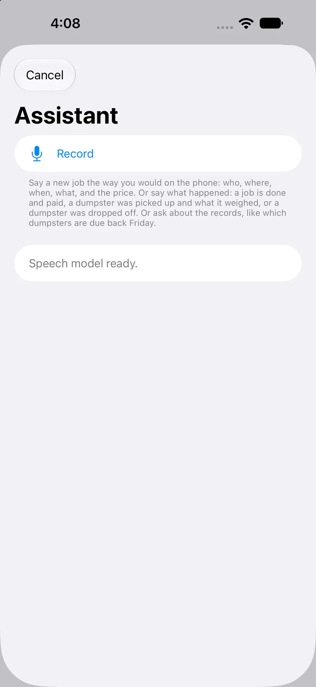
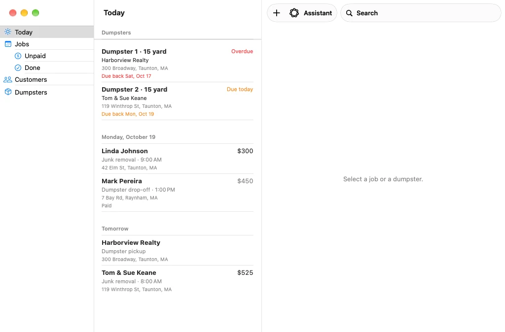
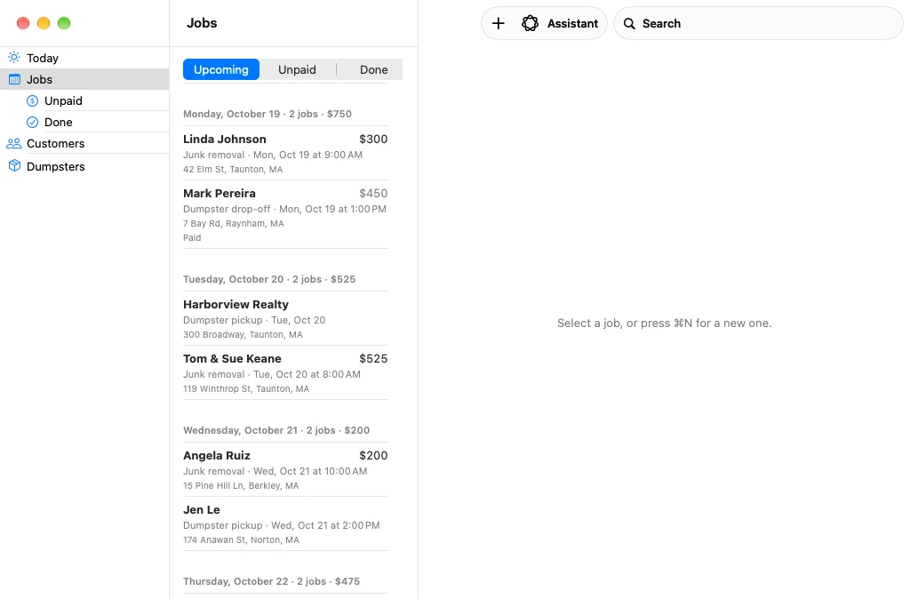
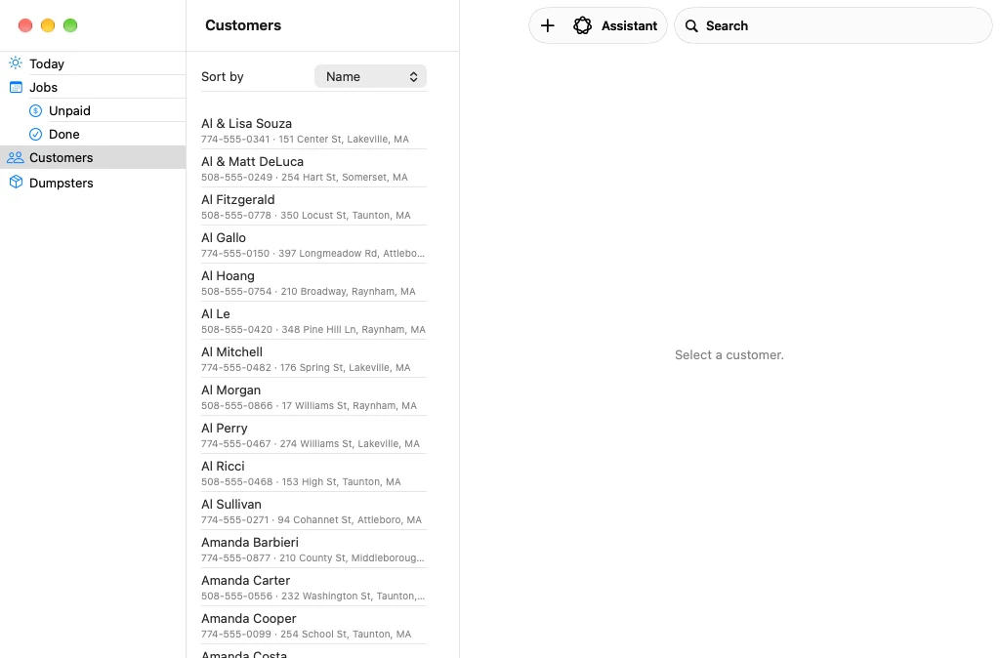
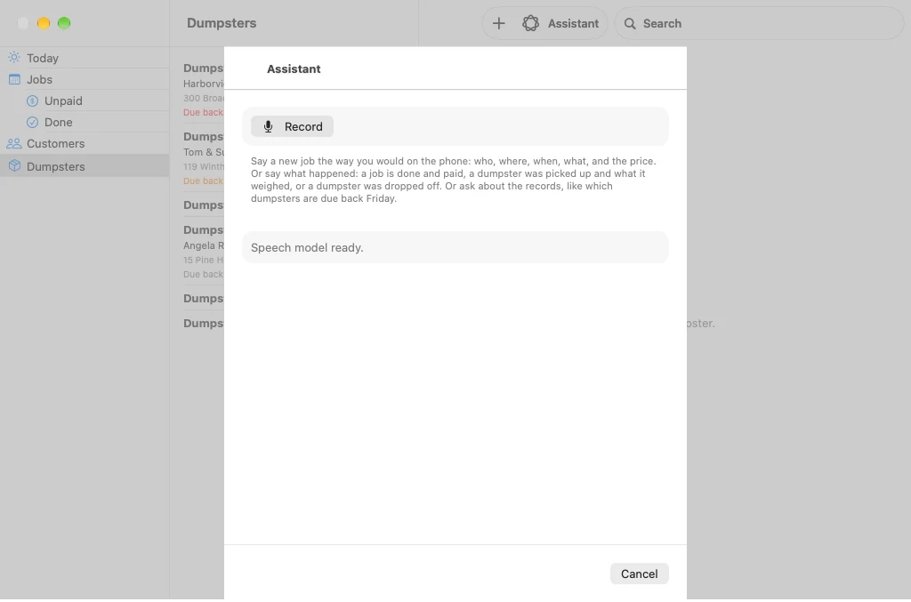

<title>Ace Junk Removal App Preview</title>
<meta name="claude:viewport-fit-sides" content="cover">
<link rel="stylesheet" href="https://fonts.googleapis.com/css2?family=Newsreader:ital,opsz,wght@0,6..72,500;0,6..72,600;1,6..72,500&family=Public+Sans:wght@400;500;600&display=swap">
<style>
  /* Layout: one quiet column; phone screens in a wrapping grid, Mac screens full width.
     On a phone each set becomes a sideways swipe, one screen at a time. */
  :root {
    --bg: #f5f6f8;
    --surface: #ffffff;
    --fg: #16181d;
    --muted: #5d6470;
    --line: #dfe3ea;
    --accent: #1f5fbf;
    --stage: #16181d;
    --stage-fg: #eceef2;
    --stage-muted: #aeb4bf;
    --stage-accent: #7fb0ff;
    --display: "Newsreader", "Iowan Old Style", Georgia, serif;
    --body: "Public Sans", -apple-system, "Helvetica Neue", Arial, sans-serif;
  }
  @media (prefers-color-scheme: dark) {
    :root:not([data-theme="light"]) {
      --bg: #121418; --surface: #1b1e24; --fg: #eceef2; --muted: #a3aab6; --line: #2c313a; --accent: #7fb0ff;
      --stage: #0c1b33; --stage-fg: #eceef2; --stage-muted: #a9b6c8; --stage-accent: #9cc2ff;
      color-scheme: dark;
    }
  }
  :root[data-theme="dark"] {
    --bg: #121418; --surface: #1b1e24; --fg: #eceef2; --muted: #a3aab6; --line: #2c313a; --accent: #7fb0ff;
    --stage: #0c1b33; --stage-fg: #eceef2; --stage-muted: #a9b6c8; --stage-accent: #9cc2ff;
    color-scheme: dark;
  }
  body {
    background: var(--bg);
    color: var(--fg);
    font-family: var(--body);
    font-size: 16px;
    line-height: 1.5;
    padding-block: 40px 64px;
    padding-left: max(16px, env(safe-area-inset-left, 0px));
    padding-right: max(16px, env(safe-area-inset-right, 0px));
  }
  main { max-width: 1120px; margin: 0 auto; }
  header { max-width: 62ch; margin-bottom: 8px; }
  h1 {
    font-family: var(--display);
    font-weight: 600;
    font-size: clamp(2rem, 4vw, 2.9rem);
    line-height: 1.1;
    letter-spacing: -0.01em;
    margin: 0 0 12px;
    text-wrap: balance;
  }
  .lede { margin: 0; font-size: 1.05rem; color: var(--muted); }
  .meta { margin: 10px 0 0; font-size: 0.85rem; color: var(--muted); letter-spacing: 0.04em; text-transform: uppercase; }
  .jump { display: flex; flex-wrap: wrap; gap: 8px; margin: 20px 0 0; padding: 0; list-style: none; }
  .jump a {
    display: inline-flex; align-items: center; min-height: 36px; padding: 0 14px; border-radius: 18px;
    border: 1px solid var(--line); background: var(--surface); color: var(--fg); text-decoration: none; font-size: 0.92rem; font-weight: 500;
  }
  .jump a:focus-visible { outline: 2px solid var(--accent); outline-offset: 2px; }
  section { scroll-margin-top: 16px; }
  h2 {
    font-family: var(--display);
    font-weight: 500;
    font-size: 1.6rem;
    margin: 48px 0 6px;
    padding-top: 24px;
    border-top: 1px solid var(--line);
    text-wrap: balance;
  }
  h3 { font-size: 1.05rem; font-weight: 600; margin: 0; line-height: 1.35; }
  .sub { margin: 0 0 20px; color: var(--muted); max-width: 62ch; }

  /* What it covers */
  .covers { display: grid; grid-template-columns: repeat(auto-fit, minmax(240px, 1fr)); gap: 0 32px; margin: 0; padding: 0; list-style: none; }
  .covers li { padding: 14px 0; border-top: 1px solid var(--line); min-width: 0; }
  .covers p { margin: 2px 0 0; color: var(--muted); font-size: 0.95rem; }

  /* Screens */
  .phones {
    display: grid;
    grid-template-columns: repeat(auto-fit, minmax(230px, 1fr));
    gap: 28px 24px;
  }
  figure { margin: 0; min-width: 0; }
  .phones img, .macs img, .shot img { cursor: zoom-in; }
  .phones img, .shot img {
    width: 100%;
    height: auto;
    display: block;
    border-radius: 22px;
    border: 1px solid var(--line);
    background: var(--surface);
  }
  .macs { display: grid; gap: 40px; }
  .macs figure { display: grid; grid-template-columns: minmax(0, 1fr) minmax(220px, 300px); gap: 28px; align-items: start; }
  .macs img {
    width: 100%;
    height: auto;
    display: block;
    border-radius: 10px;
    border: 1px solid var(--line);
    background: var(--surface);
  }
  .macs figcaption { margin-top: 0; }
  figcaption { margin-top: 12px; max-width: 60ch; }
  figcaption b { display: block; font-weight: 600; margin-bottom: 2px; }
  figcaption .lead { display: block; color: var(--fg); font-size: 0.98rem; }
  figcaption ul, .doing ul { margin: 8px 0 0; padding-left: 18px; color: var(--muted); font-size: 0.93rem; display: grid; gap: 4px; }
  figcaption li::marker, .doing li::marker { color: var(--accent); }

  /* The Assistant */
  .assistant { display: grid; grid-template-columns: minmax(200px, 260px) minmax(0, 1fr); gap: 32px; align-items: start; }
  .doing { display: grid; gap: 18px; min-width: 0; }
  .doing p { margin: 2px 0 0; color: var(--muted); font-size: 0.95rem; }
  .doing .quote { font-family: var(--display); font-style: italic; color: var(--fg); font-size: 1.05rem; }
  .says-title { font-family: var(--display); font-weight: 500; font-size: 1.3rem; margin: 36px 0 10px; }
  .says { display: grid; grid-template-columns: minmax(0, 1.3fr) minmax(0, 1fr); margin: 0; }
  .says dt, .says dd { margin: 0; padding: 12px 0; border-top: 1px solid var(--line); min-width: 0; }
  .says dt { font-family: var(--display); font-style: italic; font-size: 1.1rem; line-height: 1.35; padding-right: 24px; }
  .says dd { color: var(--muted); font-size: 0.95rem; }
  .says dt:nth-last-of-type(1), .says dd:nth-last-of-type(1) { border-bottom: 1px solid var(--line); }
  .footnote { margin: 12px 0 0; color: var(--muted); font-size: 0.9rem; max-width: 62ch; }
  .callout {
    margin: 32px 0 0; padding: 28px clamp(20px, 4vw, 40px); border-radius: 14px;
    background: var(--stage); color: var(--stage-fg);
  }
  .callout .eyebrow { margin: 0 0 6px; font-size: 0.78rem; font-weight: 600; letter-spacing: 0.12em; text-transform: uppercase; color: var(--stage-accent); }
  .callout h3 { font-family: var(--display); font-weight: 500; font-size: clamp(1.6rem, 4.5vw, 2.3rem); line-height: 1.12; text-wrap: balance; }
  .callout p { margin: 10px 0 0; color: var(--stage-muted); max-width: 60ch; }

  footer { margin-top: 56px; padding-top: 20px; border-top: 1px solid var(--line); color: var(--muted); font-size: 0.9rem; }
  a { color: var(--accent); }
  .swipe-hint { display: none; }
  .tap-hint { display: none; }
  @media (max-width: 860px) {
    .macs figure { grid-template-columns: minmax(0, 1fr); gap: 0; }
    .macs figcaption { margin-top: 12px; }
  }
  @media (max-width: 700px) {
    body { padding-block: 28px 48px; }
    header { margin-bottom: 4px; }
    .lede { font-size: 1rem; }
    h2 { margin-top: 36px; font-size: 1.45rem; }
    .tap-hint { display: inline; }
    .phones, .macs {
      display: flex; gap: 14px; overflow-x: auto; overscroll-behavior-x: contain; align-items: flex-start;
      scroll-snap-type: x mandatory; -webkit-overflow-scrolling: touch; scrollbar-width: none;
      margin-left: calc(-1 * max(16px, env(safe-area-inset-left, 0px)));
      margin-right: calc(-1 * max(16px, env(safe-area-inset-right, 0px)));
      padding: 2px max(16px, env(safe-area-inset-right, 0px)) 6px max(16px, env(safe-area-inset-left, 0px));
      scroll-padding-inline: max(16px, env(safe-area-inset-left, 0px));
    }
    .phones::-webkit-scrollbar, .macs::-webkit-scrollbar { display: none; }
    .phones figure { flex: 0 0 76%; scroll-snap-align: start; }
    .macs figure { flex: 0 0 90%; scroll-snap-align: start; display: block; }
    .phones img { border-radius: 20px; }
    figcaption { margin-top: 10px; }
    .swipe-hint { display: flex; justify-content: center; align-items: center; gap: 7px; margin: -6px 0 12px; }
    .swipe-hint i { width: 7px; height: 7px; border-radius: 50%; background: var(--line); display: block; transition: background .2s; }
    .swipe-hint i.on { background: var(--muted); }
    .assistant { grid-template-columns: minmax(0, 1fr); gap: 20px; }
    .shot { width: 62%; margin: 0 auto; }
    .says { grid-template-columns: minmax(0, 1fr); }
    .says dt { padding: 12px 0 2px; }
    .says dd { border-top: 0; padding: 0 0 12px; }
    .says dt:nth-last-of-type(1) { border-bottom: 0; }
  }
  @media (prefers-reduced-motion: reduce) { .swipe-hint i { transition: none; } }

  /* Full-size view when a picture is tapped */
  .zoom { border: 0; padding: 0; margin: 0; width: 100vw; height: 100dvh; max-width: none; max-height: none; background: rgba(10, 11, 14, 0.94); color: #fff; }
  .zoom::backdrop { background: rgba(10, 11, 14, 0.94); }
  .zoom-body { width: 100%; height: 100%; overflow: auto; padding: 60px 12px 56px; box-sizing: border-box; }
  .zoom-body img { display: block; margin: 0 auto; border-radius: 12px; height: auto; }
  .zoom-body img.tall { width: auto; max-width: 100%; max-height: calc(100dvh - 90px); }
  .zoom-body img.wide { width: max(100%, 980px); max-width: none; }
  .zoom-close { position: fixed; top: max(12px, env(safe-area-inset-top, 0px)); right: max(12px, env(safe-area-inset-right, 0px)); font: 600 15px var(--body); color: #fff; background: rgba(255, 255, 255, 0.16); border: 0; border-radius: 999px; padding: 8px 16px; cursor: pointer; }
  .zoom-close:focus-visible { outline: 2px solid #fff; outline-offset: 2px; }
  .zoom-caption { position: fixed; left: 0; right: 0; bottom: 0; padding: 10px 16px max(12px, env(safe-area-inset-bottom, 0px)); font-size: 0.9rem; color: rgba(255, 255, 255, 0.82); text-align: center; background: rgba(10, 11, 14, 0.9); }
</style>

<main>
  <header>
    <h1>Ace Junk Removal App</h1>
    <p class="lede">One app for the phones and the office: customers, jobs, the six dumpsters, and a voice assistant that fills in a job from a spoken note. It runs on iPhone and on the Mac, and the records stay in step between them.</p>
    <p class="meta">Preview · October 2026</p>
    <ul class="jump" aria-label="Jump to">
      <li><a href="#iphone">On the iPhone</a></li>
      <li><a href="#assistant">The Assistant</a></li>
      <li><a href="#mac">On the Mac</a></li>
    </ul>
  </header>

  <section id="covers">
    <h2>What it covers</h2>
    <ul class="covers">
      <li><h3>Customers and jobs</h3><p>Every customer and job in one place, with search, what is owed, and each customer’s history.</p></li>
      <li><h3>The six dumpsters</h3><p>Where each one is, when it is due back, and the overweight charge worked out at pickup.</p></li>
      <li><h3>A voice assistant</h3><p>Say what happened or what is needed. It makes the change and shows it first.</p></li>
      <li><h3>iPhone and Mac</h3><p>The crew’s phones and the office Mac work from the same records.</p></li>
    </ul>
  </section>

  <section id="iphone">
    <h2>On the iPhone</h2>
    <p class="sub">Four tabs along the bottom: Today, Jobs, Customers and Dumpsters. Nothing is more than two taps away.<span class="tap-hint"> Swipe to see each screen; tap one to see it larger.</span></p>
    <div class="swipe-hint" data-for="phones" aria-hidden="true"></div>
    <div class="phones" aria-label="iPhone screens">
      <figure>
        
        <figcaption><b>Today</b><span class="lead">The day at a glance, and the first screen the crew sees.</span>
          <ul>
            <li>How many jobs today, and for how much</li>
            <li>Dumpsters due back or overdue, with overdue in red</li>
            <li>What customers still owe</li>
            <li>Then today’s jobs and tomorrow’s</li>
          </ul>
        </figcaption>
      </figure>
      <figure>
        
        <figcaption><b>Jobs</b><span class="lead">Upcoming, Unpaid and Done.</span>
          <ul>
            <li>Upcoming is grouped by day, soonest first, with a count and a total for each day</li>
            <li>Unpaid is the money still to collect: every finished job not paid yet</li>
            <li>Swipe a job to mark it done</li>
          </ul>
        </figcaption>
      </figure>
      <figure>
        
        <figcaption><b>Customers</b><span class="lead">The whole customer list, in your pocket.</span>
          <ul>
            <li>Search by name, phone number or address</li>
            <li>Tap a customer for their history: every job, totals, what they owe, and their dumpster rentals</li>
            <li>Call or get directions in one tap</li>
            <li>The existing list comes in once from the office spreadsheet</li>
          </ul>
        </figcaption>
      </figure>
      <figure>
        
        <figcaption><b>Dumpsters</b><span class="lead">All six at a glance, built to use one-handed in the truck.</span>
          <ul>
            <li>In the yard, out, due today or overdue</li>
            <li>Where each one is and when it is due back</li>
            <li>At pickup, enter the weight and the overweight charge is worked out</li>
            <li>The overweight rate per ton is set once in Settings</li>
          </ul>
        </figcaption>
      </figure>
    </div>
  </section>

  <section id="assistant">
    <h2>The Assistant</h2>
    <p class="sub">Tap Record and say it the way you’d say it on the phone. The words are written down on the phone itself, then the Assistant works out what is meant and finds the right customer, job or dumpster.</p>
    <div class="assistant">
      <figure class="shot">
        
      </figure>
      <div class="doing">
        <div>
          <h3>In the office</h3>
          <p>Book jobs, add and update customers, move or cancel a job, and ask about the records.</p>
        </div>
        <div>
          <h3>In the field</h3>
          <p>Mark a job done and paid on site, log a dumpster drop-off, pickup or swap with the weight, or text a customer that you’re on the way.</p>
        </div>
        <div>
          <h3>Several things at once</h3>
          <p class="quote">“Johnson’s done, paid cash, and she wants a dumpster next Friday”</p>
          <p>That becomes two short screens, one after the other: her job marked done and paid, then the new dumpster job, already filled in with her details.</p>
        </div>
      </div>
    </div>

    <h3 class="says-title">What you can say</h3>
    <dl class="says">
      <dt>“Mrs. Johnson, 42 Elm, garage cleanout Friday morning, 300 cash”</dt>
      <dd>Books the job and asks about anything missing</dd>
      <dt>“Johnson’s done, paid cash”</dt>
      <dd>Marks her job done and paid</dd>
      <dt>“Picked up dumpster 1, 2.8 tons”</dt>
      <dd>Logs the pickup and works out the overweight charge</dd>
      <dt>“Swapped 2 at Keane’s, 3.1 tons, left 5”</dt>
      <dd>Takes one away, weighs it, and leaves the other in its place</dd>
      <dt>“Linda Johnson’s new number is 508 555 0199”</dt>
      <dd>Updates the customer</dd>
      <dt>“Text Johnson we’re 15 minutes out”</dt>
      <dd>Gets a text to her ready to send</dd>
      <dt>“Cancel the Ruiz job”</dt>
      <dd>Shows the job and asks before deleting it</dd>
      <dt>“Which dumpsters are due back Friday?”</dt>
      <dd>Answers from the records</dd>
    </dl>
    <p class="footnote">These are examples, not a fixed list. It also handles moved jobs, price changes, call-backs and notes about a dumpster. When it can’t do something, it says so plainly.</p>

    <div class="callout">
      <p class="eyebrow">Before anything changes</p>
      <h3>Nothing is saved until you tap.</h3>
      <p>Every change shows up first as a normal form to check: the job, the customer or the dumpster. Tap Save, or Skip. When a name or an address isn’t clear, it asks one short question at a time.</p>
    </div>
  </section>

  <section id="mac">
    <h2>On the Mac</h2>
    <p class="sub">The office sees the same records on the Mac, laid out like Mail: a sidebar on the left, the list in the middle, the details on the right.<span class="tap-hint"> Tap a window to see it larger.</span></p>
    <div class="swipe-hint" data-for="macs" aria-hidden="true"></div>
    <div class="macs" aria-label="Mac screens">
      <figure>
        
        <figcaption><b>Today</b><span class="lead">The same day at a glance, with the details alongside.</span>
          <ul>
            <li>Dumpsters due back and today’s and tomorrow’s jobs</li>
            <li>Click any of them to see it on the right</li>
          </ul>
        </figcaption>
      </figure>
      <figure>
        
        <figcaption><b>Jobs</b><span class="lead">Grouped by day with totals.</span>
          <ul>
            <li>Unpaid and Done have their own places in the sidebar, like mailboxes in Mail</li>
            <li>Click a job to see and change it on the right</li>
            <li>⌘N starts a new job</li>
          </ul>
        </figcaption>
      </figure>
      <figure>
        
        <figcaption><b>Customers</b><span class="lead">Hundreds of customers, sorted by name, last job or total spent.</span>
          <ul>
            <li>Search by name, phone or address with ⌘F</li>
            <li>Right-click for quick actions</li>
            <li>The office spreadsheet comes in once from the File menu, with a look at what was found before anything is saved</li>
          </ul>
        </figcaption>
      </figure>
      <figure>
        
        <figcaption><b>Dumpsters</b><span class="lead">Drop-off, due-back and pickup with the weigh-in, from the desk.</span>
          <ul>
            <li>What the crew logs from the truck shows up here</li>
            <li>The office can fix or fill in anything</li>
          </ul>
        </figcaption>
      </figure>
      <figure>
        
        <figcaption><b>Assistant</b><span class="lead">The same Assistant on the Mac, for notes taken at the desk.</span>
          <ul>
            <li>⇧⌘A opens it from anywhere in the app</li>
          </ul>
        </figcaption>
      </figure>
    </div>
  </section>

  <footer>Customer names and jobs shown are examples.</footer>
</main>

<dialog class="zoom" id="zoom" aria-label="Screen, full size">
  <button type="button" class="zoom-close" id="zoom-close">Done</button>
  <div class="zoom-body" id="zoom-body"></div>
  <p class="zoom-caption" id="zoom-caption"></p>
</dialog>

<script>
(function () {
  // Dots under each swipe row, one per screen, showing which one is in view.
  document.querySelectorAll('.swipe-hint').forEach(function (hint) {
    var row = document.querySelector('.' + hint.dataset.for);
    if (!row) return;
    var figs = row.querySelectorAll('figure');
    figs.forEach(function () { hint.appendChild(document.createElement('i')); });
    var dots = hint.querySelectorAll('i');
    function update() {
      var best = 0, bestDist = Infinity, left = row.getBoundingClientRect().left;
      figs.forEach(function (f, i) { var d = Math.abs(f.getBoundingClientRect().left - left - 16); if (d < bestDist) { bestDist = d; best = i; } });
      dots.forEach(function (d, i) { d.classList.toggle('on', i === best); });
    }
    row.addEventListener('scroll', function () { window.requestAnimationFrame(update); }, { passive: true });
    window.addEventListener('resize', update);
    update();
  });

  // Tap a screen to see it full size; Done, Escape or a tap outside closes it.
  var dialog = document.getElementById('zoom');
  var img = document.getElementById('zoom-img');
  var caption = document.getElementById('zoom-caption');
  var body = document.getElementById('zoom-body');
  if (!dialog || typeof dialog.showModal !== 'function') return;
  document.querySelectorAll('.phones img, .macs img, .shot img').forEach(function (thumb) {
    thumb.addEventListener('click', function () {
      img.src = thumb.currentSrc || thumb.src;
      img.alt = thumb.alt;
      img.className = thumb.closest('.macs') ? 'wide' : 'tall';
      var fig = thumb.closest('figure'); var title = fig && fig.querySelector('figcaption b');
      caption.textContent = title ? title.textContent : (thumb.closest('.shot') ? 'Assistant' : '');
      dialog.showModal();
      body.scrollTop = 0; body.scrollLeft = 0;
    });
  });
  document.getElementById('zoom-close').addEventListener('click', function () { dialog.close(); });
  body.addEventListener('click', function (e) { if (e.target === body) dialog.close(); });
})();
</script>
